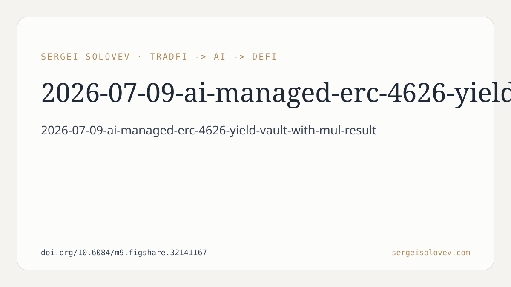

```markdown
# AI-Managed ERC-4626 Yield Vault with Multi-Criteria Decision Making: Design, Implementation, and Formal Verification
**Bottom line first:** The system passed 76,800+ randomised invariant checks with zero violations. That is the headline number, and it is a testing result — not a yield-performance result, not a mainnet deployment result. Keep that distinction in mind as you read.
---
The paper describes an automated yield-optimisation vault built on the ERC-4626 tokenised vault standard. User deposits in USDC are rebalanced between two lending protocols — Aave V3 and Compound V3 — by a Python-based off-chain agent that scores each protocol across four weighted criteria: yield, risk, cost-efficiency, and stability.
That scoring method is the claimed differentiator. Most yield aggregators pick the protocol with the higher APY and move on. This system applies Multi-Criteria Decision Making (MCDM), treating APY as one signal among four rather than the only signal. The weight assigned to each criterion is not reported in the abstract, so the exact trade-off function is not evaluable from this summary alone.
The architecture is deliberately split. Computation happens off-chain in Python, where there are no gas constraints. Decisions are then signed using EIP-712 typed data — a standard for structured, human-readable Ethereum signatures — and submitted on-chain. The contract verifies the cryptographic signature before executing any rebalance. This means every allocation decision is attributable and auditable on-chain, which is a meaningful property for a system handling user funds.
A Chainlink Automation fallback is included for liveness: if the off-chain agent fails to act, an on-chain keeper can trigger rebalancing independently. The paper frames this as a protocol liveness guarantee rather than a decentralisation claim, which is the correct framing.
---
The strongest technical claim in the paper is the formal testing result. The authors ran invariant testing — a technique that fires randomised sequences of function calls against the contract and checks that specified invariants hold throughout — and logged more than 76,800 such calls without a single violation.
Invariant testing is a meaningful safety signal. It catches state-corruption bugs, reentrancy scenarios, and accounting errors that unit tests often miss because unit tests only exercise paths the author thought to write. Reaching 76,800+ calls without a violation suggests the core accounting logic is robust against the inputs the fuzzer generated.
What invariant testing does not tell you: it does not test economic assumptions, oracle manipulation vectors, or the correctness of the scoring weights. It tests whether the contract's internal state remains self-consistent, not whether the strategy is profitable or safe under adversarial market conditions.
---
The deployment is on Ethereum Sepolia testnet with USDC. That is the right place to start — there is no real capital at risk, and the system can be validated before anyone loses money. But it also means:
- There are no yield performance numbers. The paper cannot report whether the MCDM scoring strategy outperforms simple APY comparison in terms of returns to depositors, because testnet USDC yields do not reflect mainnet market dynamics.
- There is no gas cost analysis in the abstract. The hybrid architecture reduces on-chain computation, but every rebalance still posts a signed transaction. At scale or in high-gas environments, the frequency of rebalancing matters economically. This is not addressed in the abstract.
- The two-protocol universe is narrow. Aave V3 and Compound V3 are both large, audited, and relatively homogeneous in their risk profiles. The MCDM framework's value is harder to assess against a two-option choice than it would be against five or ten protocols with meaningfully different risk characteristics.
- The scoring weights are unspecified in the abstract. MCDM systems are sensitive to how criteria are weighted. A system that weights stability highly will behave very differently from one that weights yield highly. Without knowing the weights, it is difficult to reason about edge cases.
- The agent is described as Python-based with MCDM scoring. It is not an LLM or a trained model in the machine learning sense. "AI-managed" in the title refers to an algorithmic decision-making agent, not a neural network. That is a legitimate use of the term, but worth stating plainly.
---
Despite those gaps, there are genuine contributions here. The combination of EIP-712 signed off-chain decisions with on-chain verification is architecturally clean and produces a system where every allocation change is cryptographically audited. That is a step forward relative to yield optimisers that move funds with no verifiable decision trail.
The invariant testing is thorough. 76,800+ randomised calls against a vault contract handling token accounting is a meaningful safety bar. Many deployed DeFi contracts have shipped with fewer testing guarantees.
The open-source release (GitHub: https://github.com/SergeySolovyev/ai-yield-vault) means the implementation is inspectable. That matters for a system proposing to handle user funds.
---
A mainnet shadow deployment logging real yield outcomes — even passively, without user funds — would answer the question the abstract leaves open: does MCDM scoring produce better risk-adjusted returns than APY comparison over time? Even six months of shadowed allocation data would be informative.
A sensitivity analysis on the scoring weights would show whether the strategy's behaviour is stable or brittle to parameter choice.
Extending the protocol universe beyond two options would test whether the scoring framework is genuinely useful or incidental.
---
The paper delivers what it claims: a designed, implemented, and formally tested system. The formal testing result is real and non-trivial. The yield-optimisation claim is still a hypothesis pending production evidence. That is an honest place to be for a v1.
Full preprint: https://doi.org/10.6084/m9.figshare.32141167
```